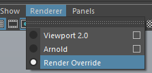
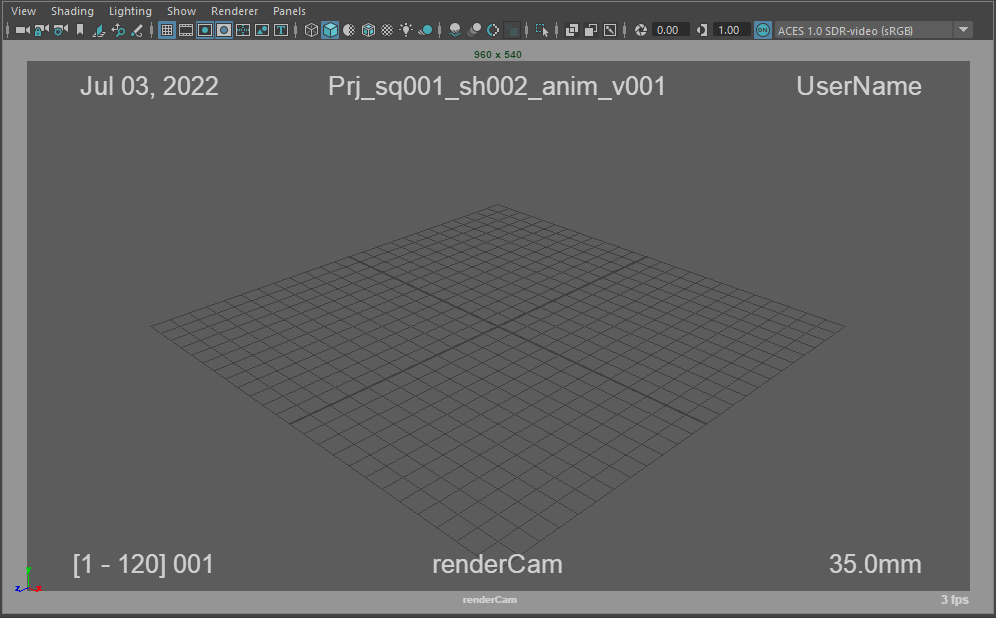

Render Override¶
Contents of this page:
Launch Render Override¶
To enable Render Override, follow
Renderer > Render Overridefrom the viewer menu.By default, the following information is displayed in the ResolutionGate frame
Date,Maya® scene name,Logged-in user name,Frame number,Camera name,Camera focal length.

See also
If you wish to customize the text to be displayed, please use Render Override Node in conjunction